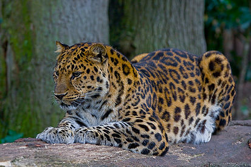

<!DOCTYPE html>
<html lang="ru"></html>
<head>
  <link rel="stylesheet" href="css/main.css">
  <link rel="stylesheet" href="css/header.css">
  <link rel="stylesheet" href="css/leopard.css">
  <link rel="stylesheet" href="css/statisctics.css">
  <title>Дальневосточный леопард</title>
  <body></body>
  <link rel="stylesheet" href="css/leopard.css">
  <link rel="stylesheet" href="css/leopard.css">
  <div class="header">
    <div class="header_title">
      <h3>Самые высокие здания и сооружения</h3>
    </div>
    <div class="menu"><a href="index.html">Главная</a><a class="active" href="leopard.html">Дальневосточный леопард</a><a href="statisctics.html">Статистика</a>
    </div>
  </div>
  <div class="leo_title">
    <h3>Дальневосточный леопард</h3>
  </div>
  <div class="leo_block"> 
    <p>В настоящее время дальневосточный леопард находится на грани вымирания. Это самый редкий из подвидов леопарда и самая редкая из всех больших кошек планеты: по данным 2022 года, в дикой природе в России сохранилась 121 особь на территории национального парка «Земля леопарда»[9] и от 8 до 12 в КитаеПерейти к разделу «#Численность подвида»[10]. Благодаря усилиям государства и работе природоохранных организаций, в частности национального парка «Земля леопарда», с начала века популяция дальневосточного леопарда в России выросла уже более чем в три раза, с около 35 до 121 особи.В настоящее время дальневосточные леопарды заселили практически все пригодные местообитания на юго-западе Приморского края (520 000 га), расселились в сопредельные с Россией территории Китая (около 150 000 га), в три раза расширив ареал подвида. Рост численности дальневосточных леопардов позволяет возвращаться кошкам на свои исконные территории в России. В 2022 году впервые в истории самая редкая в мире крупная кошка была зафиксирована фотоловушками вблизи Уссурийского заповедника, более чем в 40 километрах от национального парка «Земля леопарда», где находится ядро популяции[11].</p>
  </div>
  <div class="leo_block"> 
    <p>Литературные исторические данные о распространении подвида на территории Дальнего Востока России являются весьма скудными и отрывочными. Исследователи Амуро-Уссурийского края в середине XIX века отмечали обитание амурского леопарда в различных районах края: долина реки Уссури и более южные по отношению к её бассейну районы. Также имеются указания на встречи с леопардом в окрестностях озера Ханка и по всему Уссурийскому краю в целом. Леопольд Иванович Шренк в своих работах высказывал мнение, что амурский леопард встречается вдоль всего течения Амура вплоть до побережий Японского и Охотского морей и даже на Сахалине. Натуралист, исследователь Сибири и Дальнего Востока Ричард Карлович Маак указывал на обитание этого хищника по бассейну Амура на участке между устьями рек Сунгари и Горин. Имелись указания на редкие встречи с леопардом в юго-восточном Забайкалье в районе Нерчинского завода. Исследователь Дальнего Востока Владимир Клавдиевич Арсеньев проводил северную границу ареала в Уссурийском крае до начала 1900-х годов от озера Ханка на юг до Уссурийска, а затем на северо-восток до Анучино, к хребту Пржевальского и далее на север по восточным склонам Сихотэ-Алиня вдоль морского побережья до залива Ольги[81][85].</p>
  </div>
  <div class="footer">
    <div class="footer_left">© Раздобаров Д.А , Б9121-09.03.04, 2023-2024</div>
    <div class="footer_right">razdobarov.da@students.dvfu.ru</div>
  </div>
</head>